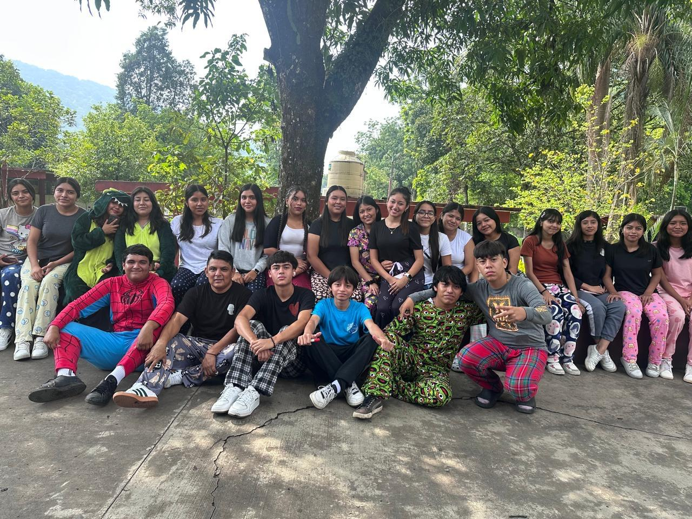
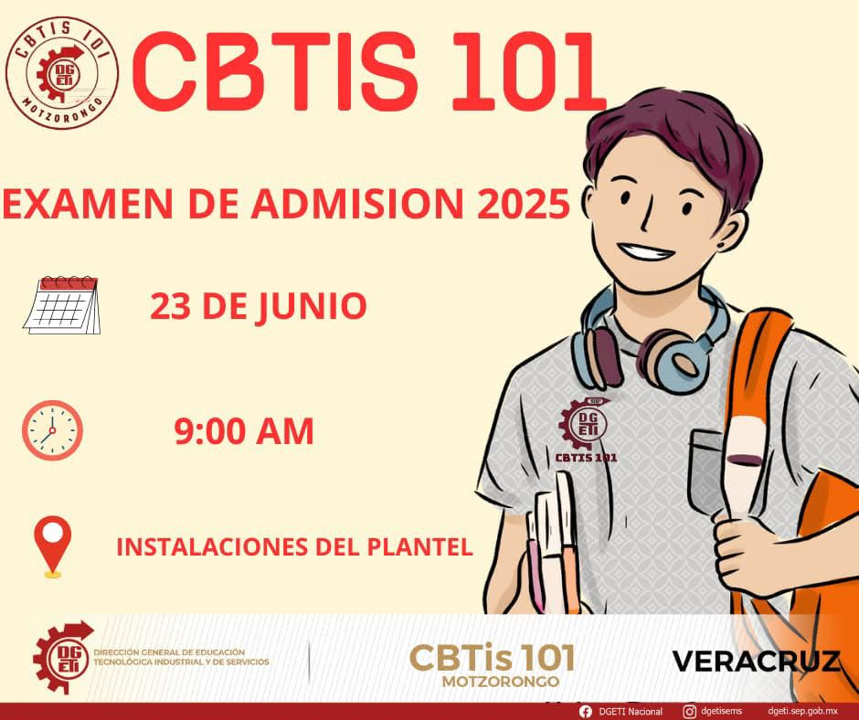

CBTIS 101
Centro de Bachillerato Tecnológico Industrial y de Servicios
ğŸ Inicio
🢠Instalaciones
📚 UAC’s
📠Carreras
📰 Últimas Noticias
📠Contacto
🫠Bienvenidos
Bienvenidos al CBTIS 101 , un Centro de Bachillerato Tecnológico Industrial y de Servicios comprometido con la formación académica y técnica de sus estudiantes.
El CBTIS 101 es una institución de educación media superior ubicada en Motzoronto Ver. Ofrece formación integral a jóvenes, combinando la educación académica con capacitación técnica en diversas especialidades. Nuestro compromiso es preparar a los estudiantes para enfrentar con éxito los retos del mundo laboral o continuar con estudios superiores.
¡Transforma tu vida en el CBTIS 101! Aquà encontrarás el camino hacia un futuro brillante y lleno de oportunidades. Nuestros programas técnicos te darán las herramientas para destacarte en el mundo laboral y alcanzar tus metas. ¡Únete a nuestra comunidad y comienza a construir el éxito que siempre has soñado! En el CBTIS 101, ¡tú puedes ser el protagonista de tu propia historia!
🢠Nuestras Instalaciones
Conoce los espacios que hacen del CBTIS 101 un lugar ideal para tu formación académica y técnica. Contamos con aulas equipadas, laboratorios modernos, talleres especializados y áreas deportivas para una educación integral.
📚 Unidades de Aprendizaje (UAC’s)
Pensamiento matematico
Quimica
Inglés
Lengua Y Comunicación
Ciencias Sociales
Cultura Digital
Humanidades
Recursos Socioemocionales
📠Carreras Ofertadas
Hax click en la carrera técnica que más llame tu atención para proporcionarte más información:
🧪 LaboratorÁsta ClÁnico
🲠Producción Industrial De Alimentos
📊 Contabilidad
⚙️ Mecánica Industrial
🧪 LaboratorÁsta ClÁnico
¿Te interesa la ciencia, la salud y el trabajo de laboratorio? La especialidad de Laboratorista ClÁnico en el CBTIS 101 es una excelente opción para quienes desean formarse como profesionales técnicos capacitados en el análisis de muestras biológicas.
A lo largo de la carrera, desarrollarás habilidades en la toma y procesamiento de muestras de sangre, orina y otros fluidos corporales. Aprenderás a utilizar equipos especializados como microscopios, centrÁfugas y espectrofotómetros, además de aplicar técnicas de microbiologÁa, hematologÁa e inmunologÁa, siempre siguiendo estrictas normas de bioseguridad.
💉 Toma muestras.
🔬 Observa lo invisible.
😷 Y sÁ, usarás guantes, bata, cubrebocas…
Como egresado o egresada, estarás preparado(a) para trabajar en hospitales, laboratorios clÁnicos, clÁnicas, centros de salud y bancos de sangre, aportando información clave para el diagnóstico médico.
Estudia Laboratorista ClÁnico en el CBTIS 101 y prepárate para una carrera técnica con ciencia, precisión y vocación de servicio.
🲠Producción Industrial De Alimentos
Si te apasiona la ciencia, los procesos de transformación y la calidad de los alimentos que consumimos, la especialidad técnica de Producción Industrial de Alimentos es ideal para ti.
En esta carrera aprenderás a diseñar, controlar y mejorar procesos para la elaboración de productos alimenticios, desde su procesamiento hasta su conservación, envasado y almacenamiento. Se te capacitará en el manejo de maquinaria especializada, normativas de higiene y seguridad, control de calidad, análisis microbiológicos y técnicas de producción en la industria alimentaria.
Los egresados de esta especialidad están preparados para trabajar en empresas procesadoras de alimentos, laboratorios de control de calidad, industrias de conservación y transformación, asà como emprender sus propios proyectos productivos.
Estudia Producción Industrial de Alimentos en el CBTIS 101 y forma parte del equipo que garantiza alimentos seguros, nutritivos y de calidad para todos.
📊 Contabilidad
¿Te gustan los números, el orden y la administración? La especialidad técnica de Contabilidad en el CBTIS 101 te ofrece una formación sólida y práctica en el manejo financiero de empresas y organizaciones.
En esta carrera aprenderás a registrar, clasificar e interpretar operaciones contables, elaborar estados financieros, calcular impuestos, controlar inventarios y apoyar en la toma de decisiones económicas. También conocerás las leyes fiscales, el uso de software contable y las herramientas administrativas necesarias para el buen funcionamiento de cualquier negocio.
Al egresar, están preparados para incorporarse al sector productivo o continuar estudios superiores en áreas como ingenierÁa mecánica, mantenimiento industrial y robótica.
Como egresado o egresada podrás trabajar en despachos contables, empresas privadas, instituciones públicas o emprender tu propio servicio de asesorÁa fiscal y financiera.
Estudia Contabilidad y conviértete en la pieza clave que da orden, control y rumbo a las finanzas del mundo empresarial.
⚙️ Mecánica Industrial
CapacÁtate en diseño mecánico, mantenimiento de maquinaria, soldadura, CNC y automatización industrial.
¿Te interesa saber cómo funcionan las máquinas, reparar equipos y entender los sistemas que mueven al mundo industrial? La especialidad de Mecánica Industrial en el CEBETIS te prepara para convertirte en un técnico altamente capacitado en el diseño, mantenimiento y operación de maquinaria industrial.
Durante tu formación aprenderás a interpretar planos mecánicos, utilizar herramientas y equipos de precisión, manejar torno, fresadora, soldadura y otros procesos fundamentales para la fabricación y reparación de piezas y sistemas mecánicos. Además, recibirás capacitación en normas de seguridad, control de calidad y prevención de riesgos laborales.
Los egresados de esta especialidad pueden desempeñarse en industrias manufactureras, metalmecánicas, automotrices, mineras, de mantenimiento, asà como en talleres o emprendimientos propios.
Estudia Mecánica Industrial y conviértete en el especialista que mantiene en marcha la tecnologÁa del presente y del futuro.
📰 Últimas Noticias
🉠Semana del Estudiante
En esta semana realizamos actividades culturales, deportivas y recreativas para celebrar el DÁa del Estudiante .
Empezamos el martes con DÁa sin Mochila , donde los alumnos podÁan destacar su creatividad trayendo cualquier cosa en lugar de una mochila.
El miércoles fue el DÁa de Sombreros y Peinados Locos , una jornada divertida donde el alumnado mostró su ingenio con peinados originales y sombreros hechos a mano.
El jueves celebramos el DÁa en Pijamas , permitiendo a todos asistir en ropa cómoda, descansar y relajarse durante las clases.

Finalmente, el viernes cerramos con broche de oro con un maratón de 5 kilómetros que inició y terminó en el CBTIS en Motzorongo.
También se llevó a cabo la emotiva coronación del Rey y la Reina del Estudiante 2025 , y se habilitó un espacio recreativo con juegos inflables y zonas con agua , donde los alumnos pudieron refrescarse y divertirse. 💦
¡Gracias a todas y todos por su entusiasmo y participación!
📠Examen de Admisión
Recuerda que los exámenes de admisión serán el 23 de junio del presente año.

📚 Fin de Semestre
Estudia para tus exámenes. El semestre está por terminar. ¡Ánimo!
© 2025 CBTIS 101 - Centro de Bachillerato Tecnológico Industrial y de Servicios
Página hecha por: Darrelle Rivera, Suri Cruz, Lázaro Eslava